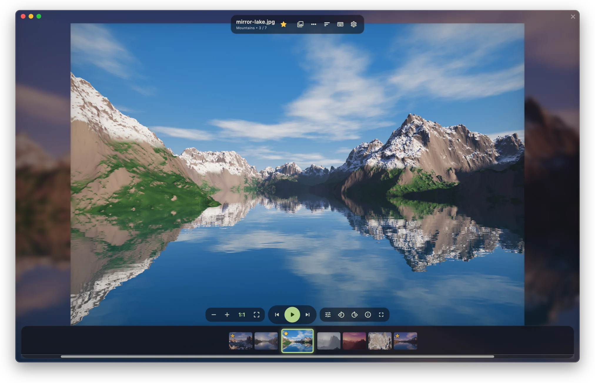
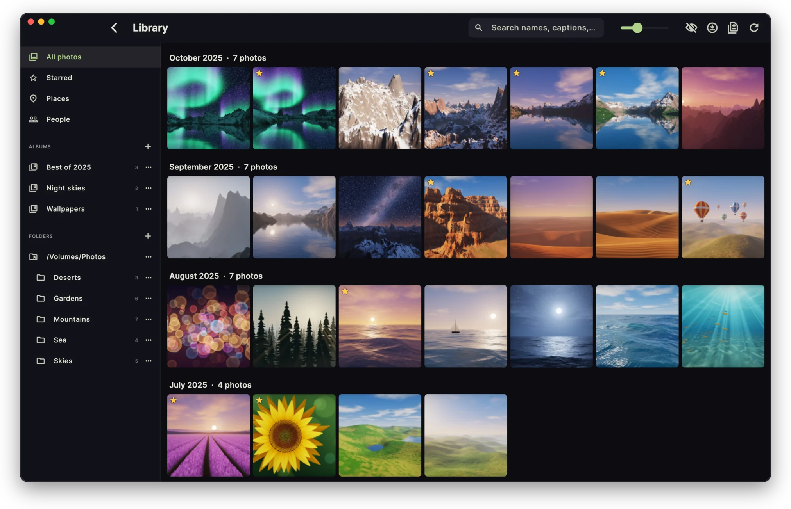
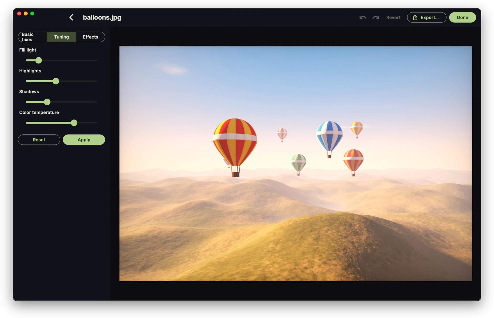

Open one photo, see the whole folder
Picavi loads every image next to the one you opened, so you can keep pressing the arrow key.
Fast to look through
Smooth zoom and pan, full screen, slideshow, and an info panel with EXIF, captions and tags.
Tidy as you go
Rename, copy, move or bin one photo or a whole selection. Deleting always goes to the Trash.
All from the keyboard
Star, rotate, edit and browse with single keys. Press ? to see every shortcut.
A photo library that leaves your files where they are
Point it at the folders you already have. Stars, captions and tags are saved in a small file next to your photos, so they travel with the folder.

Find anything
Browse by month, folder, album or star, or search names, captions, tags, cameras, dates and people.
Places and people
See photos on a map, and on macOS group and name faces without uploading anything.
Import and de-duplicate
Copy from a camera into dated folders, skip what you have, and find exact duplicates.
Picasa-style editing that never touches the original
I'm Feeling Lucky, fill light, color temperature, red-eye, straighten, crop to print sizes and nine effects. Undo or revert whenever you like.

Collages, contact sheets and prints
Turn a selection into a mosaic or grid collage, a contact sheet, or prints with up to nine photos on a page.
Download Picavi
Picavi is in alpha and its installers aren't signed yet, so your system asks you to confirm the first launch.
macOS 12 or later
Open it once, then allow it in System Settings, Privacy & Security, Open Anyway.
Get picavi-macos.dmgPicavi vs Picasa
Google stopped supporting Picasa in March 2016. Picavi isn't finished either, so here is where it stands. Most of the gaps are on the roadmap.
| Feature | Picasa 3 | Picavi |
|---|---|---|
| Still developed | No, support ended in 2016 | Yes |
| Platforms | Windows, macOS | macOS, Windows, Linux |
| Works offline, on your own folders | Yes | Yes |
| Non-destructive edits in a sidecar file | .picasa.ini | .picavi.json |
| I'm Feeling Lucky, crop, straighten, red-eye | Yes | Yes |
| Tuning sliders and effects | Yes | Yes |
| Albums, stars, captions, tags | Yes | Yes |
| Photos on a map | Yes | Yes |
| Face recognition | Yes | macOS only |
| Duplicate finder | Yes | Exact copies |
| Collage, contact sheet, print, camera import | Yes | Yes |
| HEIC and AVIF photos | No | macOS only |
| Reads existing .picasa.ini data | Yes | Not yet |
| RAW photos | Yes | Not yet |
| Video playback and movie maker | Yes | Not yet |
Questions
Is Picavi a good replacement for Picasa?
If you used Picasa to look through folders, star and caption photos, make quick fixes and keep everything on your own computer, Picavi covers that today. If you depend on RAW files or videos, it doesn't yet.
Can I bring my Picasa library over?
Your photos, yes: add the same folders to the Picavi library and it indexes them in place. Picasa's own albums, face tags and unsaved edits (its .picasa.ini files) aren't imported yet. Picavi leaves those files alone.
Does it run on Apple silicon Macs, Windows 11 and Linux?
It runs on macOS 12 or later, Windows and Linux desktops. A few features use macOS frameworks and are Mac-only for now: face grouping, Live Text, the share menu, and HEIC, AVIF and TIFF decoding.
Is it free? Do I need an account?
It's free, and there is no account or cloud. Photos, edits, tags and faces stay on your computer. Picavi goes online only for map tiles while a map is open, and once to fetch its interface font.
Will it change or delete my originals?
Edits never do. The one thing written into a photo is a rotation you choose to save. Deleting moves files to the Trash or Recycle Bin, and copies and moves never overwrite.
Which image formats are supported?
JPEG, PNG, GIF, WebP, BMP, ICO and SVG everywhere, plus HEIC, HEIF, AVIF and TIFF on macOS.